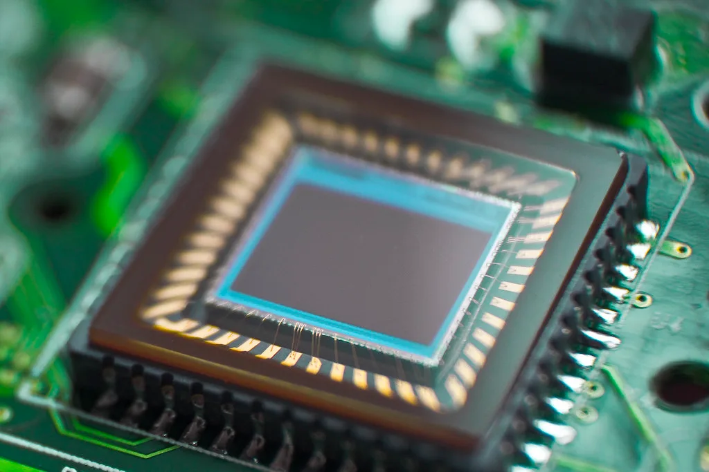

삼성전기, 엔비디아에 AI 반도체 패키지기판 장기 공급…세종·부산 증설
삼성전기가 22일 엔비디아와 AI 반도체용 패키지기판을 장기간 공급하는 전략적 비즈니스 파트너십을 체결했다고 밝혔다. 2026년부터 다년간 엔비디아의 차세대 AI 반도체용 패키지기판을 공급하는 계약으로, 업계에서는 플립칩 볼그리드어레이(FC-BGA) 기준으로 역대 최대 규모의 계약이라는 평가가 나온다. 삼성전기가 메모리나 파운드리가 아닌 패키지기판 영역에서 엔비디아와 이 정도 규모의 장기 공급 관계를 맺은 것은 이번이 처음이다.
공급 품목은 엔비디아의 AI 연산용 칩셋에 들어가는 패키지기판과, 데이터센터 내부에서 칩과 칩 사이의 초고속 데이터 전송을 담당하는 네트워크 스위치용 패키지기판 두 종류다. 패키지기판은 반도체 칩과 메인 회로기판 사이를 연결해 신호와 전력을 전달하는 핵심 부품으로, AI 반도체의 성능이 높아질수록 기판에 요구되는 미세 공정과 신뢰성 수준도 함께 올라가는 분야로 꼽힌다.

이번 계약에 따라 삼성전기는 세종과 부산 사업장에 엔비디아 전용 생산라인을 증설하기로 했다. 두 지역은 삼성전기의 국내 핵심 생산기지로, 전용 라인 신설은 엔비디아 물량에 맞춰 설비와 공정을 최적화하겠다는 의미로 해석된다. 삼성전기와 엔비디아 양사는 생산라인 증설에 공동으로 투자하기로 한 것으로 알려졌으며, 이는 공급사와 고객사가 설비투자 위험을 함께 분담하는 방식으로 장기 협력 관계의 안정성을 높이려는 시도로 풀이된다.
삼성전기는 엔비디아 공급 물량이 앞으로 수년간 연평균 두 자릿수 이상 증가할 것으로 내다보고 있다. 회사 측은 2028년이 되면 연간 패키지기판 생산능력 가운데 상당 부분을 엔비디아 물량이 차지할 것으로 예상한다고 밝혔다. AI 반도체 수요가 전 세계적으로 가파르게 늘어나는 가운데, 엔비디아가 핵심 부품 공급망을 안정적으로 확보하기 위해 국내 기업과의 협력을 강화하는 흐름으로도 읽힌다.

업계에서는 이번 계약이 국내 반도체 부품 산업 전반에 긍정적인 신호가 될 수 있다고 평가한다. 메모리 분야에서 삼성전자와 SK하이닉스가 HBM을 매개로 엔비디아와 밀접한 관계를 맺어온 데 이어, 패키지기판 영역에서도 국내 기업이 핵심 공급망에 본격적으로 편입되는 모습이기 때문이다. 다만 패키지기판 산업은 설비투자 규모가 크고 기술 난이도가 높아, 수주 물량을 안정적으로 소화할 수 있는 양산 역량 확보가 관건이 될 것으로 보인다.
경쟁 측면에서도 이번 계약은 의미가 있다는 분석이다. 그동안 FC-BGA 패키지기판 시장은 대만과 일본계 기업들이 상당한 점유율을 차지해 왔는데, 삼성전기가 엔비디아라는 핵심 고객사를 대규모로 확보하면서 글로벌 경쟁 구도에 변화가 생길 수 있다는 전망이 나온다. 다만 경쟁사들 역시 AI 반도체 수요 확대에 맞춰 설비투자를 늘리고 있어, 중장기적인 점유율 경쟁은 계속될 것으로 보인다.
한편 AI 반도체 관련주의 변동성이 큰 최근 증시 상황을 고려할 때, 이번 계약이 삼성전기 실적과 주가에 미칠 영향에도 시장의 관심이 쏠린다. 세종·부산 생산라인 증설이 본격화되는 시점과 실제 양산 물량이 반영되는 시점에 따라 실적 개선 효과가 가시화되는 시기도 달라질 수 있어, 향후 구체적인 투자 계획과 가동 일정 공개 여부가 뒤따르는 관전 포인트로 꼽힌다. 업계에서는 이번 계약 규모가 확정된 만큼 삼성전기가 다음 실적 발표에서 관련 수주 효과를 어떻게 설명할지도 주목하고 있다.